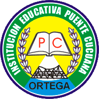

INTRODUCCIÓN

En la Institución Educativa Puente Cucuana, el aprendizaje de la estadística es una herramienta clave para desarrollar habilidades de análisis y toma de decisiones informadas. La estadística es una disciplina fundamental que nos permite recolectar, organizar, analizar e interpretar datos para comprender mejor el mundo que nos rodea. Desde las estadísticas de salud y educación hasta los resultados de encuestas locales, esta ciencia tiene una aplicación directa en nuestra vida cotidiana.
A través de esta unidad, los estudiantes de la institución tendrán la oportunidad de conocer los principios básicos de la estadística, familiarizándose con términos esenciales como población, muestra, individuo, y medidas de tendencia central (media, mediana, moda). Estos conceptos les permitirán no solo realizar cálculos numéricos, sino también interpretar y presentar información de manera clara y efectiva.
La estadística no solo se limita al aula, sino que se extiende a diversas áreas del conocimiento. En el contexto local, los estudiantes podrán aplicar lo aprendido para analizar datos de la comunidad, como el número de habitantes, el comportamiento de los cultivos o los patrones de tráfico en el municipio. De este modo, la estadística se convierte en una herramienta poderosa para comprender y mejorar nuestro entorno.
Con este enfoque práctico, la Institución Educativa Puente Cucuana busca promover una educación integral que prepare a sus estudiantes no solo para el examen académico, sino también para enfrentar los retos y oportunidades que el mundo actual les ofrece.
DOCENTE: DIANA CAMACHO